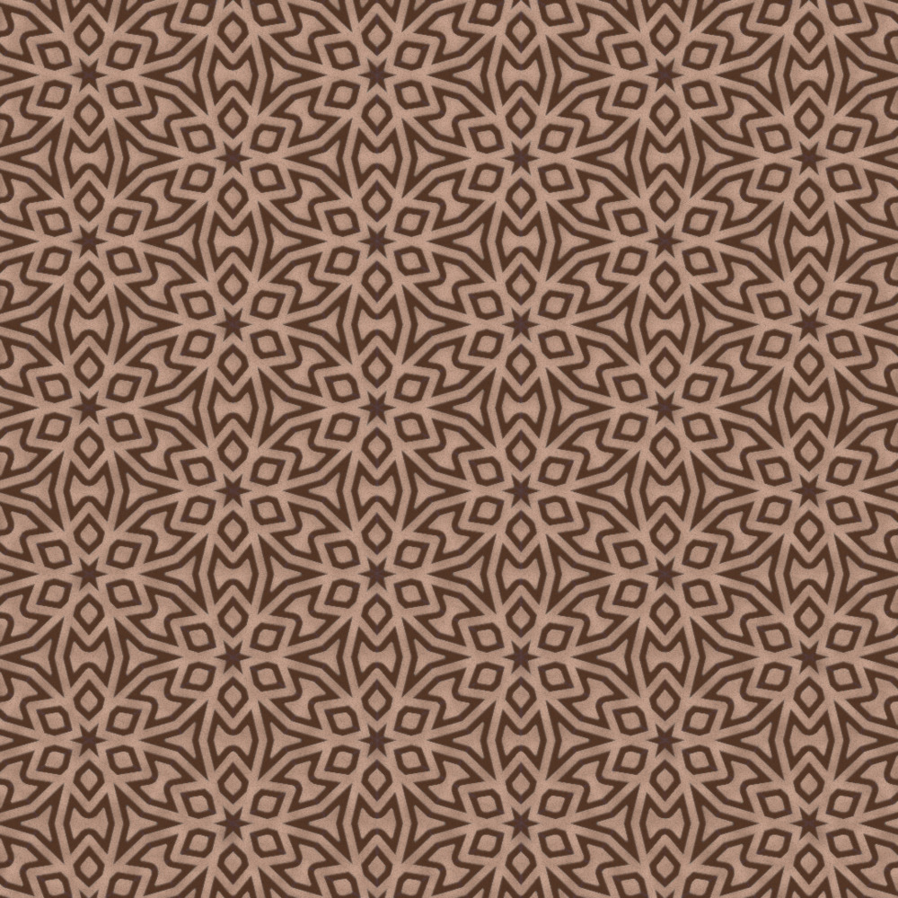
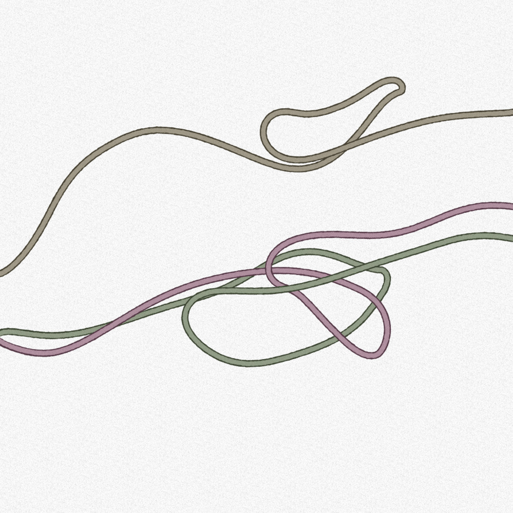
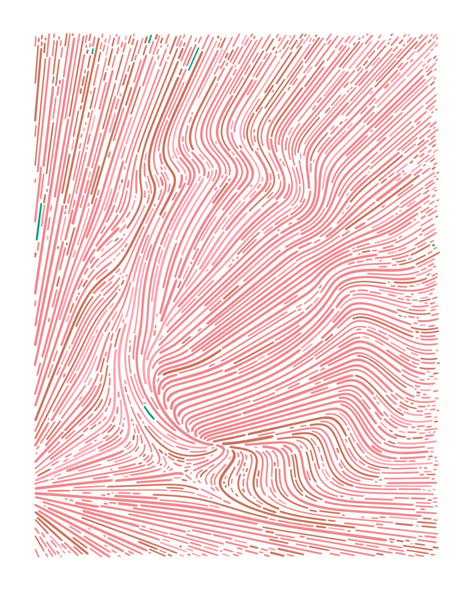
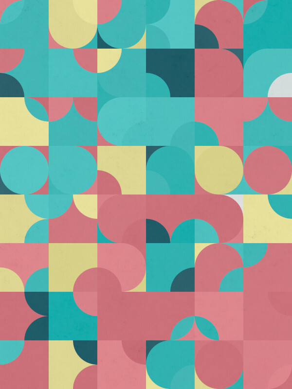
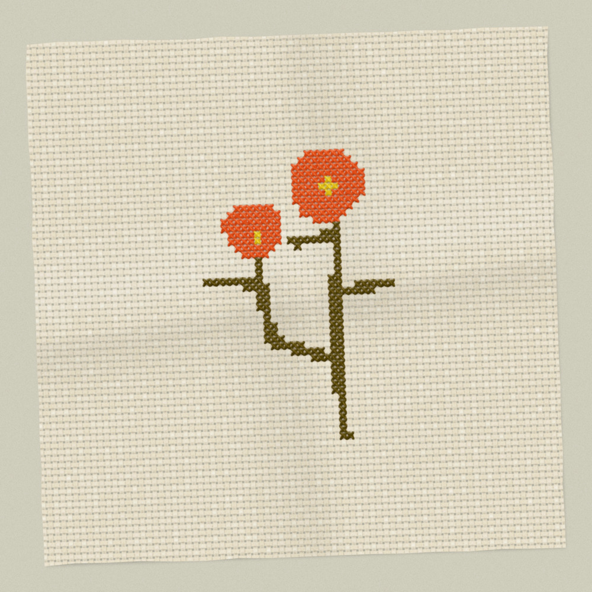
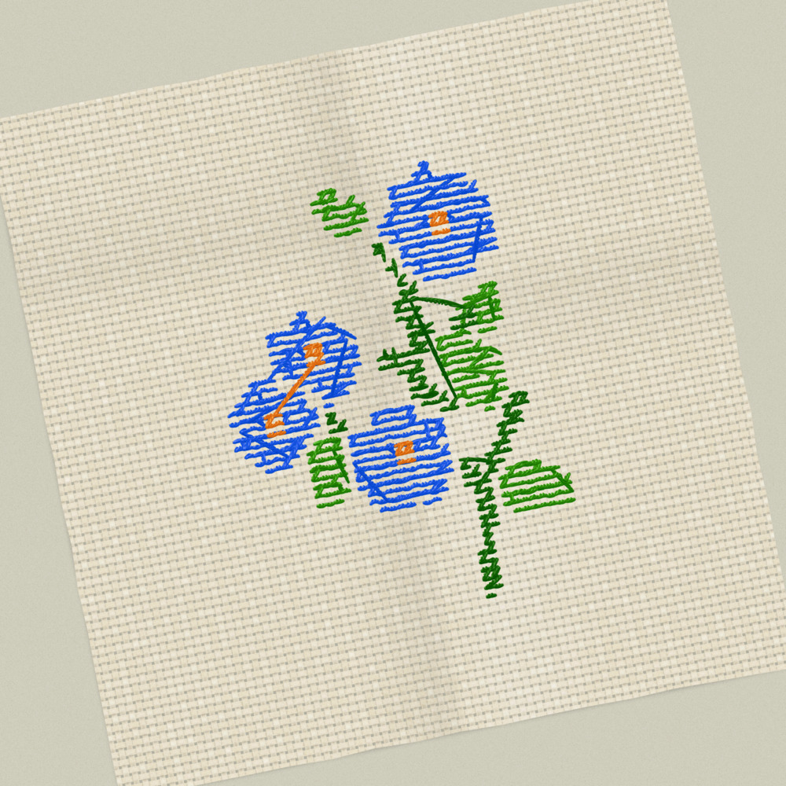
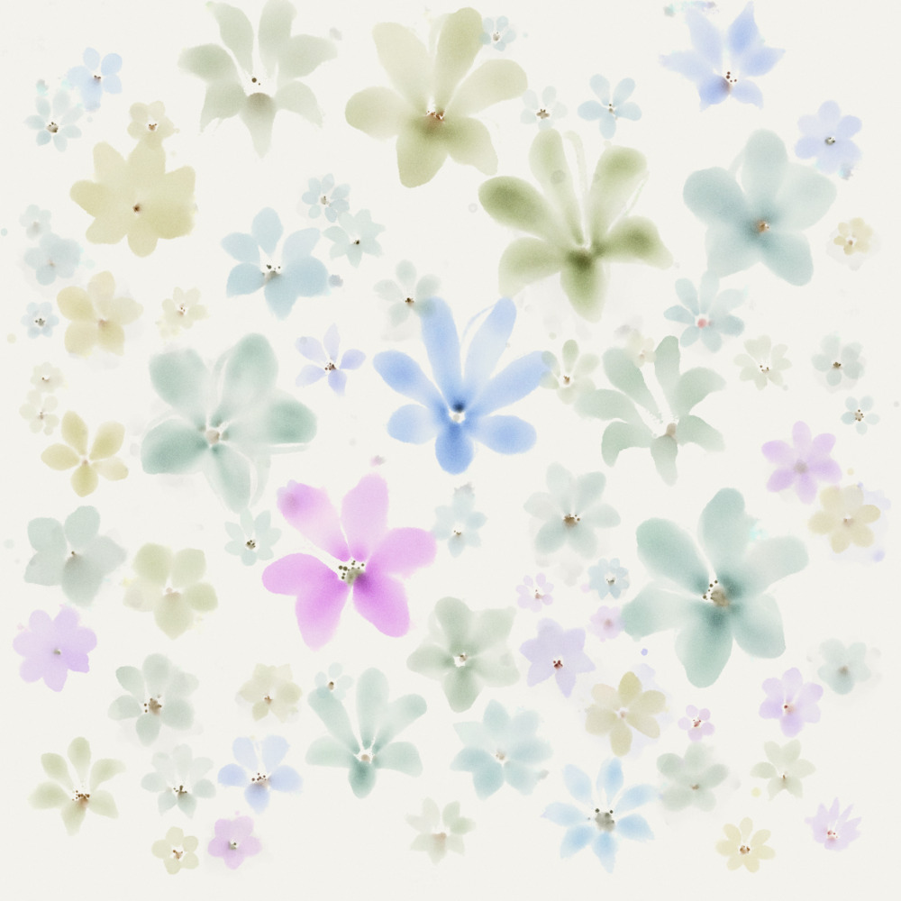
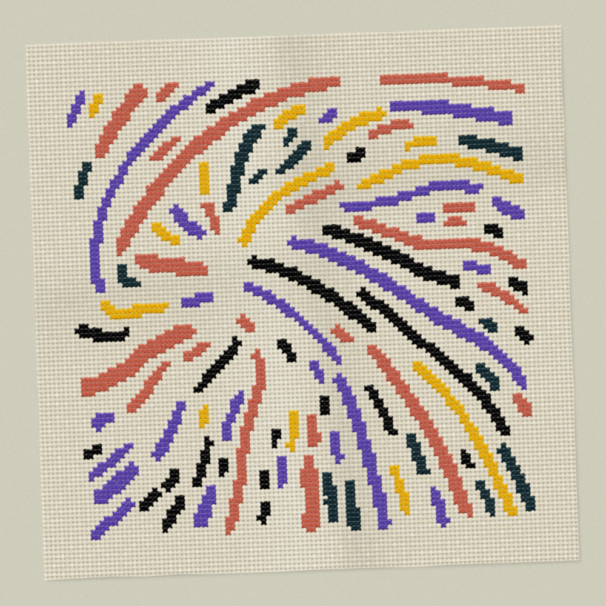
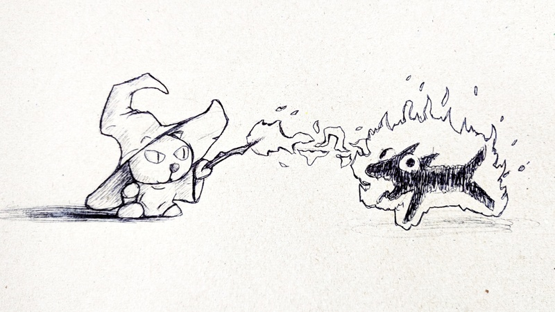

I create artworks using algorithms, code, and math. It is called procedural art. (No, it’sn’t AI. And no NFTs!)
My art programs are usually written in JavaScript using p5.js. Have a look at some of the pieces below!








